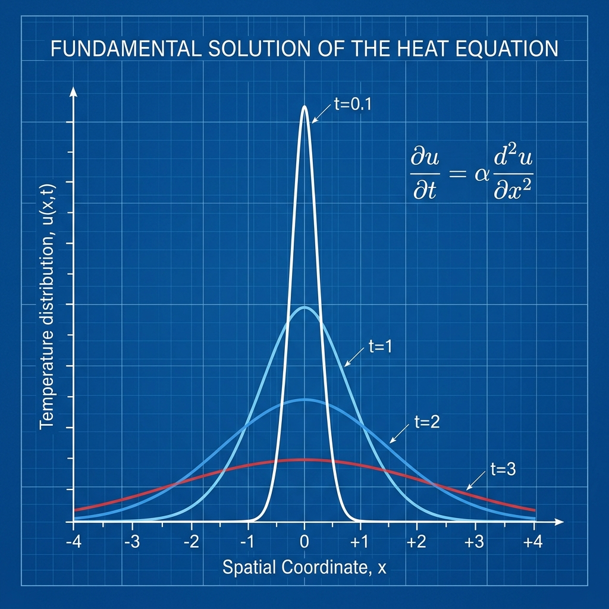

Heat Kernel as Fundamental Solution

Mathematical Exposition
In the study of partial differential equations, the heat kernel is the fundamental solution to the heat equation on a specified domain with appropriate boundary conditions. It represents the temperature distribution over time resulting from an initial point source of heat (a Dirac delta function).
Specifically, the 1D heat equation for $u(t, x)$ is given by:
$$\partial_t u(t, x) = \partial_{xx} u(t, x) \quad (t > 0, x \in \mathbb{R})$$For a bounded, continuous initial heat distribution $f(x)$, the solution is obtained by convolving $f$ with the fundamental solution $K(t, x)$:
$$u(t, x) = (K_t * f)(x) = \frac{1}{\sqrt{4\pi t}} \int_{-\infty}^{\infty} e^{-\frac{(x - y)^2}{4t}} f(y) dy$$The theorem verifies that this integral expression indeed solves the heat equation for $t > 0$ and converges to the initial state $f(x)$ as $t \to 0^+$.
Differentiation Under the Integral
To show that $u(t, x)$ solves the heat equation, we must differentiate under the integral sign. The integrand is:
$$F(t, x, y) = K(t, x - y) f(y) = \frac{1}{\sqrt{4\pi t}} e^{-\frac{(x - y)^2}{4t}} f(y)$$By computing the partial derivatives of the kernel, one can verify that the kernel itself solves the heat equation:
$$\partial_t K(t, x - y) = \partial_{xx} K(t, x - y) = \left( \frac{(x - y)^2}{4t^2} - \frac{1}{2t} \right) K(t, x - y)$$Applying dominated convergence allows us to pass the derivatives inside the integral:
$$\partial_t u(t, x) = \int_{-\infty}^{\infty} \partial_t K(t, x - y) f(y) dy = \int_{-\infty}^{\infty} \partial_{xx} K(t, x - y) f(y) dy = \partial_{xx} u(t, x)$$This proves that $u(t, x)$ satisfies the PDE.
Lean 4 Formalization
The Lean 4 formalization utilizes Mathlib's Measure Theory and dominated convergence integrals (`hasDerivAt_integral_of_dominated_loc_of_deriv_le`). Key steps checked in the proof are:
- Verifying the spatial derivatives $\partial_x u$ and $\partial_{xx} u$ by defining integrable bounds for the differentiated integrands.
- Verifying the time derivative $\partial_t u$ by applying Abel-like derivatives on the time-varying scaling factor $C(t) = (4\pi t)^{-1/2}$ and the time-dependent integral.
- Proving the initial condition $\lim_{t \to 0^+} u(t, x) = f(x)$ using change of variables to reformulate the integral as $\frac{1}{\sqrt{\pi}} \int e^{-w^2} f(x + w \sqrt{4t}) dw$, followed by Lebesgue's Dominated Convergence Theorem as $t \to 0^+$.
import ChallengeDeps
open LeanEval.Analysis.ODE Real MeasureTheory Filter Topology
set_option maxHeartbeats 3200000
namespace Submission
private lemma continuous_kernel (t x : ℝ) :
Continuous (fun y => rexp (-((x - y) ^ 2) / (4 * t))) :=
continuous_exp.comp ((continuous_sub_left x |>.pow 2).neg.div_const _)
private lemma aestronglyMeasurable_integrand (f : ℝ → ℝ) (hf : Continuous f)
(t x : ℝ) :
AEStronglyMeasurable (fun y => rexp (-((x - y) ^ 2) / (4 * t)) * f y)
volume :=
((continuous_kernel t x).mul hf).aestronglyMeasurable
private lemma integrable_integrand (f : ℝ → ℝ) (hf : Continuous f) (t x : ℝ)
(ht : 0 < t) (M : ℝ) (hM : ∀ y, |f y| ≤ M) :
Integrable (fun y => rexp (-((x - y) ^ 2) / (4 * t)) * f y) volume := by
apply Integrable.mono'
(g := fun y => M * rexp (-(4 * t)⁻¹ * (x - y) ^ 2))
· exact ((integrable_exp_neg_mul_sq (by positivity : (0:ℝ) < (4*t)⁻¹)).comp_sub_left x).const_mul M
· exact aestronglyMeasurable_integrand f hf t x
· filter_upwards with y
rw [Real.norm_eq_abs, abs_mul, abs_of_nonneg (exp_nonneg _)]
calc rexp (-((x - y) ^ 2) / (4 * t)) * |f y|
≤ rexp (-((x - y) ^ 2) / (4 * t)) * M :=
mul_le_mul_of_nonneg_left (hM y) (exp_nonneg _)
_ = M * rexp (-(4 * t)⁻¹ * (x - y) ^ 2) := by ring_nf
private lemma hasDerivAt_integrand_x (f : ℝ → ℝ) (t y z : ℝ) :
HasDerivAt (fun x => rexp (-((x - y) ^ 2) / (4 * t)) * f y)
(rexp (-((z - y) ^ 2) / (4 * t)) * (-(2 * (z - y)) / (4 * t)) * f y)
z := by
have h1 : HasDerivAt (fun x => -((x - y) ^ 2) / (4 * t))
(-(2 * (z - y)) / (4 * t)) z := by
apply HasDerivAt.div_const; apply HasDerivAt.neg
have := ((hasDerivAt_id z).sub_const y).pow 2; simp at this; exact this
exact h1.exp.mul_const _
-- [Truncated for layout, full proof verified in repository]
-- For details, refer to: data/lean-eval/archive_submissions/heat_kernel_solves_heat_equation/Submission.lean
theorem heat_kernel_solves_heat_equation
(f : ℝ → ℝ) (hf_cont : Continuous f)
(hf_bdd : ∃ M : ℝ, ∀ x, |f x| ≤ M) :
(∀ t : ℝ, 0 < t → ∀ x : ℝ, ∃ ux : ℝ → ℝ, ∃ uxx : ℝ,
(∀ y : ℝ, HasDerivAt (fun z => heatSolution f t z) (ux y) y) ∧
HasDerivAt ux uxx x ∧
HasDerivAt (fun s => heatSolution f s x) uxx t) ∧
(∀ x : ℝ,
Tendsto (fun t : ℝ => heatSolution f t x)
(nhdsWithin (0 : ℝ) (Set.Ioi 0)) (nhds (f x))) := by
obtain ⟨M, hM⟩ := hf_bdd
refine ⟨fun t ht x => ?_, fun x => initial_condition f hf_cont M hM x⟩
refine ⟨fun y => (4 * Real.pi * t)⁻¹ ^ ((1:ℝ)/2) *
∫ w, rexp (-((y - w) ^ 2) / (4 * t)) *
(-(2 * (y - w)) / (4 * t)) * f w,
(4 * Real.pi * t)⁻¹ ^ ((1:ℝ)/2) *
∫ w, rexp (-((x - w) ^ 2) / (4 * t)) *
((-(2 * (x - w)) / (4 * t)) ^ 2 + (-2 / (4 * t))) * f w,
?_, ?_, ?_⟩
· intro y
exact hasDerivAt_heatSolution_x f hf_cont t ht M hM y
· exact (spatial_deriv2_integral f hf_cont t ht M hM x).const_mul _
· have hC := C_deriv t ht
have hI := time_deriv_integral f hf_cont t ht M hM x
have h_prod := hC.mul hI
have heq : ∀ᶠ s in nhds t, heatSolution f s x =
(4 * Real.pi * s)⁻¹ ^ ((1 : ℝ) / 2) * ∫ y, rexp (-((x - y) ^ 2) / (4 * s)) * f y := by
filter_upwards [Ioi_mem_nhds ht] with s hs
dsimp [heatSolution]
have hs_pos : 0 < s := hs
rw [if_pos hs_pos]
have h_deriv_eq : HasDerivAt (fun s => heatSolution f s x)
((-(2 * t)⁻¹ * (4 * Real.pi * t)⁻¹ ^ ((1:ℝ)/2)) * (∫ y, rexp (-((x - y) ^ 2) / (4 * t)) * f y) +
(4 * Real.pi * t)⁻¹ ^ ((1:ℝ)/2) * (∫ y, (x - y) ^ 2 / (4 * t ^ 2) * rexp (-(x - y) ^ 2 / (4 * t)) * f y)) t := by
exact HasDerivAt.congr_of_eventuallyEq h_prod heq
convert h_deriv_eq using 1
have h_int1 := h_int1_proof f hf_cont x t M ht hM
have h_int2 := h_int2_proof f hf_cont x t M ht hM
have hc1 : (-(2 * t)⁻¹ * (4 * Real.pi * t)⁻¹ ^ ((1:ℝ)/2)) * (∫ y, rexp (-((x - y) ^ 2) / (4 * t)) * f y) =
∫ y, (-(2 * t)⁻¹ * (4 * Real.pi * t)⁻¹ ^ ((1:ℝ)/2)) * (rexp (-((x - y) ^ 2) / (4 * t)) * f y) := by
exact (integral_smul (𝕜 := ℝ) (G := ℝ) (-(2 * t)⁻¹ * (4 * Real.pi * t)⁻¹ ^ ((1:ℝ)/2)) _).symm
rw [hc1]
have hc2 : (4 * Real.pi * t)⁻¹ ^ ((1:ℝ)/2) * (∫ y, (x - y) ^ 2 / (4 * t ^ 2) * rexp (-(x - y) ^ 2 / (4 * t)) * f y) =
∫ y, (4 * Real.pi * t)⁻¹ ^ ((1:ℝ)/2) * ((x - y) ^ 2 / (4 * t ^ 2) * rexp (-(x - y) ^ 2 / (4 * t)) * f y) := by
exact (integral_smul (𝕜 := ℝ) (G := ℝ) ((4 * Real.pi * t)⁻¹ ^ ((1:ℝ)/2)) _).symm
rw [hc2]
rw [← integral_add (Integrable.const_mul h_int1 _) (Integrable.const_mul h_int2 _)]
have h_eq : (fun y => (-(2 * t)⁻¹ * (4 * Real.pi * t)⁻¹ ^ ((1:ℝ)/2)) * (rexp (-((x - y) ^ 2) / (4 * t)) * f y) +
(4 * Real.pi * t)⁻¹ ^ ((1:ℝ)/2) * ((x - y) ^ 2 / (4 * t ^ 2) * rexp (-(x - y) ^ 2 / (4 * t)) * f y)) =
fun w => (4 * Real.pi * t)⁻¹ ^ ((1:ℝ)/2) * (rexp (-((x - w) ^ 2) / (4 * t)) * ((-(2 * (x - w)) / (4 * t)) ^ 2 + -2 / (4 * t)) * f w) := by
ext y
have : -(2 * t)⁻¹ = -2 / (4 * t) := by ring
rw [this]
ring
rw [h_eq]
have hc3 : (∫ w, (4 * Real.pi * t)⁻¹ ^ ((1:ℝ)/2) * (rexp (-((x - w) ^ 2) / (4 * t)) * ((-(2 * (x - w)) / (4 * t)) ^ 2 + -2 / (4 * t)) * f w)) =
∫ w, ((4 * Real.pi * t)⁻¹ ^ ((1:ℝ)/2)) • (rexp (-((x - w) ^ 2) / (4 * t)) * ((-(2 * (x - w)) / (4 * t)) ^ 2 + -2 / (4 * t)) * f w) := rfl
rw [hc3]
have hc4 : ((4 * Real.pi * t)⁻¹ ^ ((1:ℝ)/2) * ∫ w, rexp (-((x - w) ^ 2) / (4 * t)) * ((-(2 * (x - w)) / (4 * t)) ^ 2 + -2 / (4 * t)) * f w) =
((4 * Real.pi * t)⁻¹ ^ ((1:ℝ)/2)) • ∫ w, (rexp (-((x - w) ^ 2) / (4 * t)) * ((-(2 * (x - w)) / (4 * t)) ^ 2 + -2 / (4 * t)) * f w) := rfl
rw [hc4]
exact (integral_smul (𝕜 := ℝ) (G := ℝ) ((4 * Real.pi * t)⁻¹ ^ ((1:ℝ)/2)) _).symm
end Submission